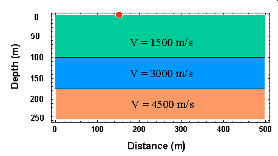
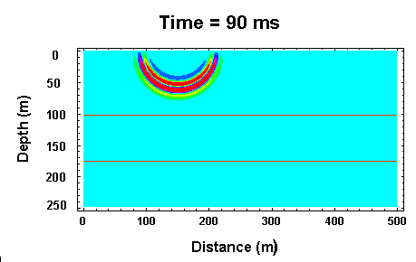
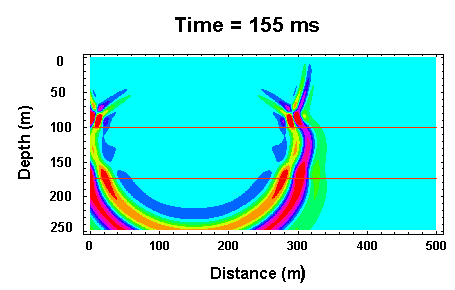
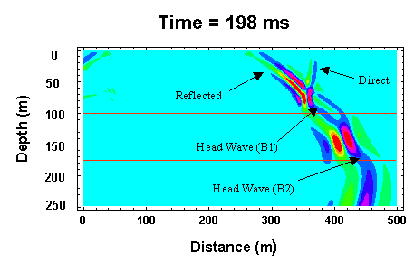

Wave Propagation with Multiple Subsurface Layers
We have already considered seismic wave propagation through a simple model of the Earth consisting of a low velocity layer overlying a higher velocity halfspace. At some surface locations, we can observe three separate seismic arrivals in this model: the direct, reflected, and critically refracted (head wave) arrivals. Only the direct arrival and the head wave are observed as first arrivals. We can determine the speed at which seismic waves propagate through the layer and the halfspace and the thickness of the layer from observations of first arrival times at various source/receiver distances (offsets).
Now, what if the Earth is more complex? Consider the slightly more complicated model shown below.

This model consists of two layers overlying a halfspace. The speed of wave propagation of the halfspace is greater than either layer, and the speed of propagation in the middle halfspace is greater than the speed in the top halfspace (i.e, velocity increases with depth). For this model, will observations of first arrival times provide us with enough information to estimate all of the relevant model parameters? The answer is yes!
Three snapshots of the wavefield at various times after initiation of the source are shown below. In addition, clicking on the link given below the snapshots will initiate a wave propagation animation.



| Click Here for Animated Version |
|---|
Examine the 198 ms snapshot. Several seismic waves are apparent. First notice that like the one layer model, there are direct, reflected, and critically refracted (head wave - B1) arrivals originating from the top interface. The head wave generated off of this top interface propagates horizontally with a speed equal to that of the middle layer.
Now, because there is a second interface below this, we generate additional arrivals that can be observed at the Earth's surface. There exists a second reflected arrival and critically refracted (head wave - B2) arrival originating from the bottom interface. The reflected arrival is too small in amplitude to be observed in the snapshot. The second head wave is just beginning to develop at a distance of about 450 m. Like the head wave off of the top interface, this head wave will propagate horizontally with a speed equal to that of the halfspace.
Thus, at any distance we could observe one of three separate first arrivals.
- At short offsets, we will observe the direct arrival. This arrival propagates horizontally along the Earth's surface at a speed equal to that of the top layer.
- At intermediate offsets, we will observe the head wave off of the top interface (B1) as a first arrival. This arrival propagates horizontally along the Earth's surface at a speed equal to that of the middle layer.
- At large offsets, we will observe the head wave off of the top of the half space (B2) as the first arrival. This arrival propagates horizontally along the Earth's surface at a speed equal to that of the halfspace.
Although this model contains only two layers, if it contained more layers we could, in general, detect the presence of these layers from first arrival times only. It is important to note, however, that there will be specific instances where this isn't true.
Seismology
- Simple Earth Model: Low-Velocity Layer Over a Halfspacepg 11
- Head Wavespg 12
- Records of Ground Motionpg 13
- Travel-time Curves for a Simple Earth Modelpg 14
- First Arrivalspg 15
- Determining Earth Structure from Travel Timespg 16
- Derivation of Travel Time Equationspg 17
- High-Velocity Layer Over a Halfspace: Reprisepg 18
- Picking Times of Arrivalspg 25
- Wave Propagation with Multiple Horizontal Layerspg 26
- Travel Time Curves from Multiple Horizontalpg 27
- Hidden Layerspg 28
- Head Waves from a Dipping Layer: Shooting Down Dippg 29
- Head Waves from a Dipping Layer: Shooting Up Dippg 30
- A Field Procedure for Recognizing Dipping Bedspg 31
- Estimating Dips and Depths from Travelpg 32